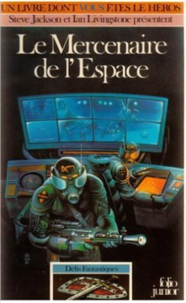
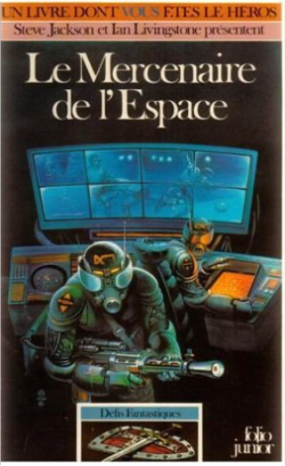

défis fantastiques, tome 12 : le mercenaire de l'espaceandrew chapman  livr souplee de poche, pochette souple |


 Made with Delicious Library
Made with Delicious LibraryNancy, State zipflap congrotus delicious library Thomas, Julien
défis fantastiques, tome 12 : le mercenaire de l'espaceandrew chapman livr souplee de poche, pochette souple |
Made with Delicious LibraryNancy, State zipflap congrotus delicious library Thomas, Julien